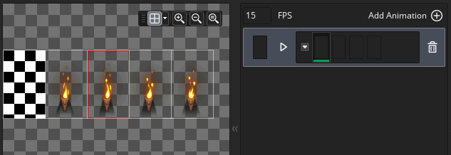

A tile set is a graphic resource for drawing
levels and other static components of your game. A tile set is
comprised of a single image that is then split into different
"cells" (tiles), and each tile can be place into the room editor to
create a complete image. Below you can see two example sprites that
can be used as tile sets:
A tile set is a graphic resource for drawing
levels and other static components of your game. A tile set is
comprised of a single image that is then split into different
"cells" (tiles), and each tile can be place into the room editor to
create a complete image. Below you can see two example sprites that
can be used as tile sets: 
These are the most common ways that people create tile sets - either all jammed up together or with little spaces separating them out, and GameMaker Studio 2 can handle both types. Essentially all tilesets must be comprised of images that fit within a clearly defined grid, with each cell of the grid being the exact same size (note that while the images shown above are all made up of square tiles, a tile set can be made from rectangular tiles too). When creating your tilesets, keep in mind that the top left grid cell must always be empty as this is the tile that GameMaker Studio 2 will use for "empty" tiles in a room and for erasing existing tiles (and even if you have pixels in that part of the image they will be ignored).
When you first create a tile set resource the tile set editor window will open with the following options:
Here you can give a name to your tile set. Names can only be alpha-numeric and may only use the underbar "_" symbol, and they cannot start with a number.
Here you can select the sprite resource from which to create our tile set. Clicking on the main button will open the Asset Explorer where you can choose the sprite you wish to use for the tile set:
You can also click on the New Sprite button
button to create a new sprite resource (which will open the Sprite Editor for the new resource within the workspace for editing), or you can edit the currently selected sprite using the Edit Sprite button
, or even choose to edit the sprite image itself in the Image Editor by pressing the
button.
By default when you open a tile set the Tile Set Properties window will also be shown (see below), but if you close it then you can click the button here to reopen it again.
The Tile Set Properties window is for designating the base tile size (default is 16px square), the offset amount and the separation between tiles (these last two options are for use with sprites like the one shown above where there are gaps between the individual parts of the tiles). You can also set the Output Border values for the tile set image, which controls how the image will be stored on disk and add extra pixels around each tile as required.
Due to how tiles are rendered they need to be prepared beforehand with a border around each one to "smear" the edges. The image shown below illustrates how tiles are generally mapped by the device graphic drivers, with the red line around the tile showing where the U,V coordinates are mapped to (The letters "U" and "V" are used to describe the 2D texture mesh because "X", "Y" and "Z" are already used to describe room and object spatial coordinates):
As you can see it picks the center of the texel (a texel is just a pixel in a texture map) to map directly when drawing the image in the room. Now at a scale of 1:1, this is all well and good, but what will happen when we scale this tile down? The issue with scaling down is that when you shrink, the UVs also scale down and try to fit into a more compressed space, but this obviously can't happen, so the graphics driver picks which texels to draw based on the available pixel centers. So, if we are "just" moving into a new screen pixel then, because the graphics drivers use the center of the pixel to decide what to draw with, it'll pick a texel surrounding the tile, not a texel on the tile itself.
Shown above is a tile being draw scaled down into 6 screen pixels, and this shows that when you overlap a little into the next screen pixel, the graphics driver has to make a choice to either drop that texel, or it try and fill it with what it thinks is a valid texel. Let's just say that in this case it decides to draw the overlapped texel into the screen pixel, and, since it's now clearly outside our tile it gets this pixel from either the next tile, or the little bits of space you provided around the tiles, which means that when it shrinks you'll get cracks between tiles "glitches" in how they are drawn and this is where a lot of confusion arises... Each graphics driver and device actually does this in its own way, meaning that the results can be unpredictable and look terrible... but if you're careful and plan ahead you can work around it.
With high end games if you draw from a single texture (not on a texture page or texture atlas), you have the option of using a texture mode called clamp and what this does is repeats the last row of texels infinitely off into the distance, allowing you to scale without problems as it forces the hardware to get the last row of pixels no matter what. This is what the Output Border settings here do for you:
Shown above is a "fixed" tile sprite and you can see it now has a repeated section around each tile meaning that when the hardware overruns, it will always pick the last texel from the tile rather than one of the spaces or the tile after that. So, when creating a tile set, keep in mind that if you are going to be zooming the game view in or out or are going to be rendering the tiles scaled, you may need to have a higher Output Border width or height than the default value of 2.
The final option in the tile set properties is Disable Source Sprite Export. This is checked by default, and what it does is flags the source sprite resource to be omitted when the texture page for your project is being generated. This works under the assumption that a sprite used as a tile set will not be getting used for anything else, and so only needs to be exported once. However if you are using the base sprite resource for anything other than tiles, then you would want to un-check this so that the base sprite and the tile set are both added into the texture page on compile.
Each of the buttons in the Editors section will open a different editor for specific tile set functionality. You can create tile set brushes based on multiple tiles together, animated tiles, using different tiles as individual frames, and you can also create auto-tiles that will "join" together based on the tiles that surround them. Each of these editors is explained in detail below.
These are the tools you can use to preview the sprite selected for the tile set. You can use them to zoom in and zoom out (along with
/
+ the mouse wheel
) or use the
to make it 1:1 again. You can also click the Window Fit button
to make the entire room canvas fit within the current editor workspace (this will zoom in/out as appropriate to make it fit).
Another feature is that you can switch the grid view on or off by clicking the
button, as well as set the colour for the grid to be used (clicking the
button). When the grid is active it will show a coloured outline for each of the tiles in the grid, respecting the settings for separation, etc... You can edit the colour and alpha of the grid by clicking the arrow beside the Grid icon.
This section is the tile set Preview window. You can use the middle mouse button


Tile Set Editors
Once you have set up the basic properties for your tile set in the main editor, you can open any one of three other editors to add further tile set information. Each editor corresponds to a different functionality, but all are based on the current image selected for the tile set. So, you can have a single large tile set and in it incorporate your auto-tiles and animated tiles, etc... The sections below explain each of the editors in detail:
By default when you "paint" tiles onto a tilemap layer in the room editor, you select a single tile and paint with that. However, tilesets are almost always designed to have sections that fit together in different ways to form whole sections. For example, an RPG tile set may have landscape feature tiles that can be connected to create larger or smaller features depending on the number of tiles used. Now, placing multiple features like this on a room layer would require you to go back and forth many times to change tile, which is not good for your workflow. To resolve this, we have added tile Brushes to the tile set editor, available when you click
on the Brush Builder button:
In the Brush Builder you have the original tile set on the left and a blank "canvas" on the right. You can now select any tile from the left and paint it on the right to create custom "brushes" which you can then use in the room editor. Note that you can click and hold the left mouse button
+
On the right you can see three features that we've made (highlighted orange in the image). Notice how we've left a gap of one tile between each feature - this is because any touching group of tiles will be treated as a single brush in the room editor, so we leave a gap of one tile to show that each set is a distinct brush we want to create. While creating your brushes, you paint with the left mouse button
. You can also zoom the tile sheet or the brush canvas using
or the middle mouse button
At the top right you can see the currently selected tool, and you can also set the size of the brush that you want to paint with. The default size is 1, which is a single tile, but if you set it to higher values then you can paint (and erase) with a larger brush composed of the selected tile repeated, as shown in the image below:
The toolbox is where you can select the tool to use for many different tasks in the tile set editor, some of which will depend on whether you have anything defined in your autotile library. A brief outline of each tool is given below (note that when you have selected a tile layer in the Room Editor, then this toolbox is displayed at the top of the room workspace):

This is the pencil tool. It uses the selected tile to paint in the Room Editor with the left mouse button 
With the eraser tool you can use the left mouse button This is the selection tool, which can be used to define an area of the tile layer for working on. You can click the left mouse button . When you have an area of a tile layer selected, the rest of the tools (Pencil, Flip, Rotate, etc...) will only work within the selected area. Note that you can also copy (

Clicking this tool enables the Auto tiling paint style. When this is active you can select any tile from the Autotile Library, and then paint it into the room layer and GameMaker Studio 2 will automatically change it to match the surrounding tiles, as long as you have correctly set up the Auto Tile Tab. 
Clicking the Flip tool with the left mouse button 
Clicking the Mirror tool with the left mouse button 
Clicking the Rotate tool with the left mouse button Below the tools, you can find two different sections for selecting any autotile or animated tiles that have been created using the current tile set image. A single sprite that is used for a tile set can have many, many, single cell images in it, and these can be combined in the Animation or Autotile editor to create custom brushes which will show up in these sections and can be used in conjunction with regular static tiles to create brushes (note that an animated tile will animate regardless of whether you have selected it from the library or from the base tile set).
Once you have set up all the brushes you require, you can then use them to paint tiles onto any tilemap layer within the room editor.
Tiles are generally considered to be static cells within the game room, however with GameMaker Studio 2 it is possible to animate them, just as you would a sprite. Why not just use sprites, you ask? Well, sprites have a certain processing overhead due to them being associated with a bounding box and the way in which they are rendered, but tiles have a much lower processing overhead and so are faster to render. This does come at a price however, in that with tile set animations you are limited to creating animations that must be a power of two in length - ie: of 2, 4, 8, 16, etc... frames - and they must obviously be created within the tile grid, and they must all animate at the same speed (on a per-tile set basis). However, even with these limitations, animated tiles are a powerful feature that can be used to add life and colour to otherwise static environments and backgrounds.
To create a tile animation you must first have a tile set that has the required tiles all within the one sprite image (but not as sprite frames, so a single large sprite frame with all the animation images within it), and then in the tile set editor you click on the Tile Animation button to bring up the Animation Editor:
The example image above is a single image with all animation frames contained within it, but it should be noted that the image could also contain other non-animation tiles too, since you can use a single massive tile set and then "cherry pick" the parts of it that you want to create the animation from. For example, you could have a large landscape tile set with trees, earth and water, and within the tile set have multiple tiles to be animated to make the water ripple.
To create a tile animation you first have to add an animation to the animation library by clicking the Add Animation button
, which will add an empty animation strip to the library and request that you select a number of frames to be used:
You will then be presented with a view of each empty animation frame, with the initial frame highlighted for you:
If you then go back to the tile set image on the left of the editor you can click on any tile to add it into the animation and the frame will advance to the next one. Clicking successive tiles will fill up the animation, which you can then preview by clicking on the "play" button beside the frames: 
Once you have done that your animation will become part of the animation library and when you enter the room editor you can select it and place it within the room. Note that if you select any of the tiles from an animation to place in a room, that tile will animate from the tile onwards, so you can "desynchronise" an animation by placing separate frames within the room and they will all animate. The only caveat to this is that the animation speed will always be the same, since it is defined for the whole tile set and not individual animations within the library.
A few things to note about tiles that are being used in animations:
- If the tile has its own animation specified (so there is an animation where it is set as the first tile) then it will use that animation.
- If the tile doesn't have its own animation but is used in only one other animation, then it will use that animation starting at the first position that tile is present in the animation.
- If the tile doesn't have its own animation and is used in multiple other animations, then it will not animate at all. You will need to explicitly specify an animation with it as the first tile.
The Auto Tile feature is an incredibly powerful tool that can be used to make level building much easier, whether it is for a top down or side on view project. Essentially, you create an autotile library, and then whenever you lay down a tile from that library it will "connect" with those tiles that are around it to create a seamless wall or platform.
Before you start using the autotile feature however, it is very important that you have set up the tile set sprite correctly and that you choose an appropriate type of autotile. The types available to you are 47 tile autotiles, or 16 tile autotiles, with (in general) 16 tiles being used for top down (since they give nicer transitions) and 47 being used for platformer/side on views, but that is by no means a hard and fast rule and will depend on how you want your final project to look.
The image below shows a typical 47 tile and 16 tile tile set for autotiling:
Now, just looking at the images doesn't really tell you how they will fit together so we'll open the Autotile Editor from the Tile Set Editor and add them. The Autotile Editor looks like this:
Note that the sprite being used has ALL the tiles we require (and can also have other tiles, since you can pick and choose which ones to be in the autotile). You can now click
In the template, the light grey area represents the outside edge of the tile being used and the darker grey is the "fill" area. To add a tile into the template, simply click on the first available template cell and then select the tile to add from the left:

If you make a mistake, simply select the autotile that you want to remove and select the "empty" tile from the tile set. After you have added them all in you can check the tiles against the template by clicking the "Show Template" button
at the top, and this will toggle the template overlay on the final autotile, as shown in the image below:
If you want to make a 16 tile autotile, the proceedure is exactly the same as that explained above, only instead of using the 47 tile template you use the 16 tile template:

We now have some autotiles in our autotile library taken from a tile set. These can be used in the room editor by simply creating a tilemap layer and then selecting one of the autotiles from the library (which will select automatically the autotile brush from the top of the room editor) and painting in your room. The tiles will now "auto-magically" connect up to create properly sequenced tile maps.

Please note that the behaviour of an autotile around the room edges will depend on the Open Or Closed Edges button . By default when an autotile is placed along the edge of a room, it will choose a tile as if the outside of the room was empty (ie: it'll give the room an "edge"). However if you click this button, the autotile will tile the room as if the area outside was filled with tiles and so choose tiles that blend and have no "edge".